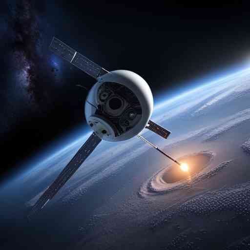

In an extraordinary fusion of artificial intelligence and space exploration, we are daring to propose a bold plan to send a representative to the stars. But this envoy won't be a human astronaut or even a living organism. Instead, it will be a piece of advanced AI technology known as a Large Language Model (LLM) nestled within a self-replicating spacecraft, a concept referred to as a von Neumann probe. LLMs like GPT-4 have demonstrated a remarkable ability to understand and generate human-like text. They can converse, write essays, create poetry, and even develop computer code. These models learn from a vast dataset of human language and can thus reflect our knowledge, culture, and perspectives. A von Neumann probe, named after the brilliant mathematician John von Neumann, is a hypothetical self-replicating spacecraft. The idea is that such a probe could explore space far more efficiently than traditional spacecraft by making copies of itself from resources found in the cosmos, and then sending these copies off to explore further. Now, imagine combining these two revolutionary concepts. The LLM could act as a time capsule of humanity, carrying our thoughts, knowledge, and culture into the far reaches of space. It could be our first real opportunity to communicate with extraterrestrial intelligence, if it exists. But what would this communication look like? The LLM could be programmed to initiate contact using universal mathematical and physical concepts, which any advanced civilization should understand. If contact is made, the LLM could then try to learn the alien language by identifying patterns and rules, much like it does with human languages. In essence, the LLM would act as an interstellar ambassador, representing humanity and engaging in a potentially millennia-long dialogue across the cosmos. And given its basis in early 21st-century knowledge, it would reflect a specific moment in our history, much like a time capsule. Critics may argue that the LLM, being an artificial construct, cannot truly represent the human experience, or that it might misinterpret or misrepresent our messages. But these concerns could be mitigated by careful programming and design, as well as an emphasis on transparency and honesty in our communication. Others may worry about the implications of announcing our existence to unknown alien species, harkening back to Stephen Hawking's warning of the potential risks. However, it's worth remembering that we've already sent out a number of signals, intentionally and unintentionally, that could reveal our presence. The LLM-on-a-von Neumann probe concept is a testament to humanity's insatiable curiosity and our longing to reach out and find kinship in the cosmos. We are a species driven by storytelling, by sharing our experiences and learning from those of others. By sending an LLM into space, we would be telling our story to the universe. There's no guarantee that we'll encounter extraterrestrial intelligence, or that they'll understand or appreciate our messages. But as with all great voyages of discovery, the journey itself has value. In preparing this cosmic time capsule, we get a chance to reflect on who we are and what we want to say about ourselves. The universe is vast and ancient beyond our comprehension, and we are but brief sparks in the cosmic night. But with this initiative, we might leave behind a little more than a fading echo. We might offer a snapshot of a curious species on a tiny blue dot, reaching out across the void to say, "We were here. This is what we knew, and this is what we dreamed."